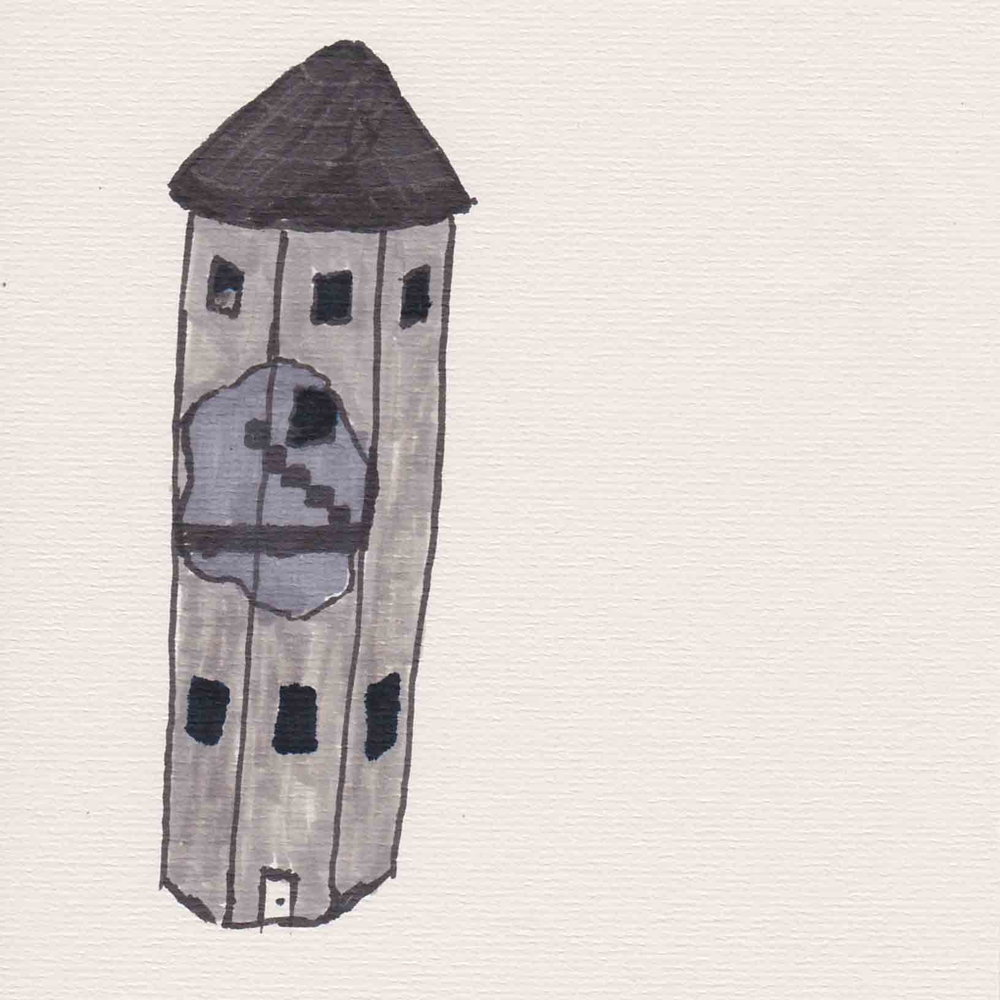
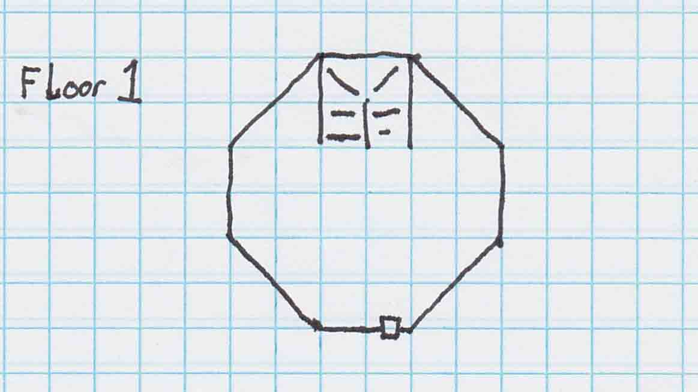
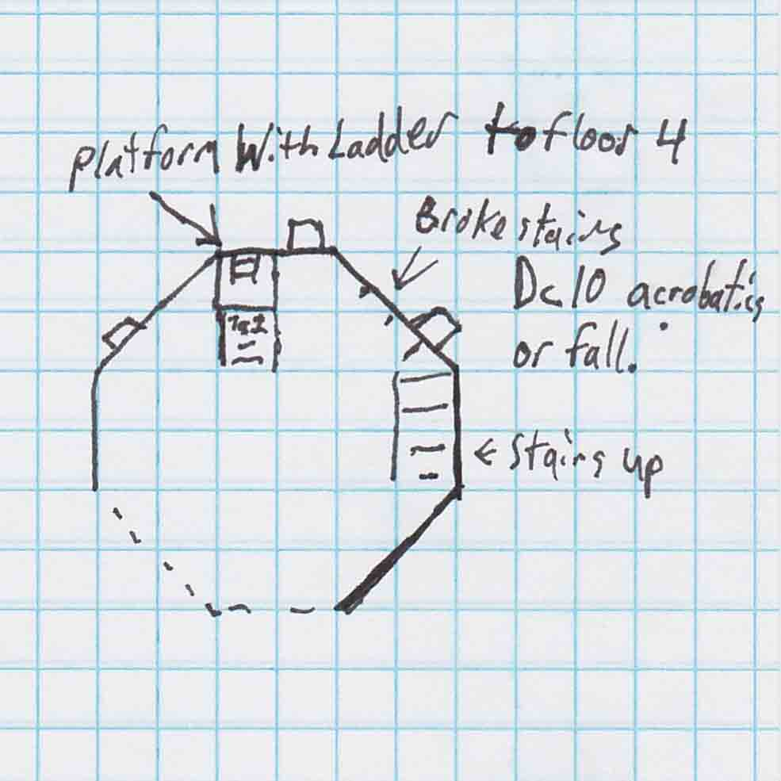
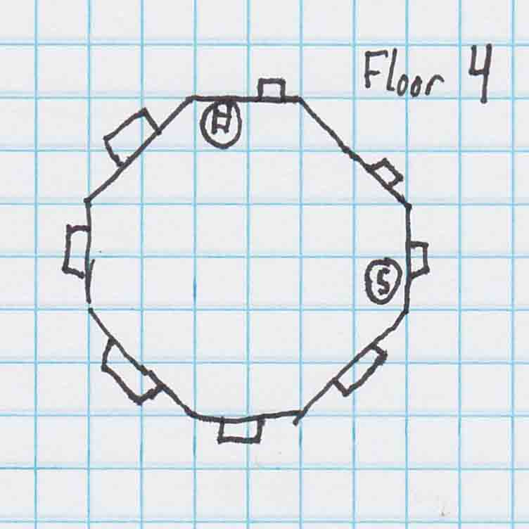

Villian's Lair

While wandering the enchanted forest (pick a forest in your game) the players run across a clearing with an old crumbling tower. Feathers litter the ground all around the clearing. In the middle an old crumbling tower stands slightly askew. The tower is covered in moss and vines. Many birds look down at you through the broken sections of the tower walls. Its unnatural the way the birds are watching your every move.
Things related to the outside of the tower.
- Nature check to determine the type of birds. DC 10= many Ravens, owls, and hawks. Alternative mix add birds that fit your games setting better.
- Tower door is stuck DC 10 strength or Athletics’ check to unstick.
Inside the Tower
Pitch black. Such a fowl smell emanates from the room.
When players have a light source. Read this...
The entire room is littered with bird poop. There is a stair case on the far side of the room going up. Looking up into the cross beams there are bird nests everywhere. Many pair of eyes are watching you. Suddenly they take flight toward you. Roll Initiative.
Set up seven ravens’ anywhere you want in this room. Players can fight inside or outside the room.

There is a large hole in the wall letting in light from outside. Floor is littered with what used to be the third floor. Stairs going up to the third floor are intact. Stairs going from the third to the platform to four are destroyed. In the center of the room Dasbad hangs upside down from the ceiling tied up and unconscious.
A Kenku stands on the platform by the ladder. He has a crossbow out and fires at the players. Roll Initiative.
Monsters
Swarm of Raven's
3 Owls
Kenku
Important Features
Players must make some acrobatics check to go across what’s left of the broken stairs or fall and take 1d6 damage.
Should someone fall of the platform with the ladder they take 2d6 damage.
-
On the Kenku's turn if he is below half his health he will cut the rope holding Dasbad and climb up the ladder. Dasbad will die if he hits the ground. If the player closest to where Dasbad will fall hasn't taken a reaction yet let them move to where Dasbad will fall and try to catch him. Dc 15 Athletics to catch Dasbad.
Kenku will try to talk to the players to save themselves if the players let them talk.
Room has a couple blankets lying on the floor with a few bags shoved in one corner. Three Kenku await them (two if the one from the last area did not survive).
Kenku are mad that Lord Latida is cutting down the forest little by little. Also the son while hunting that morning tried to kill them.
Its very dark up here. This area only contains a small chest that's unlocked and contains a small ruby worth 20 gp.
Next page= Monsters